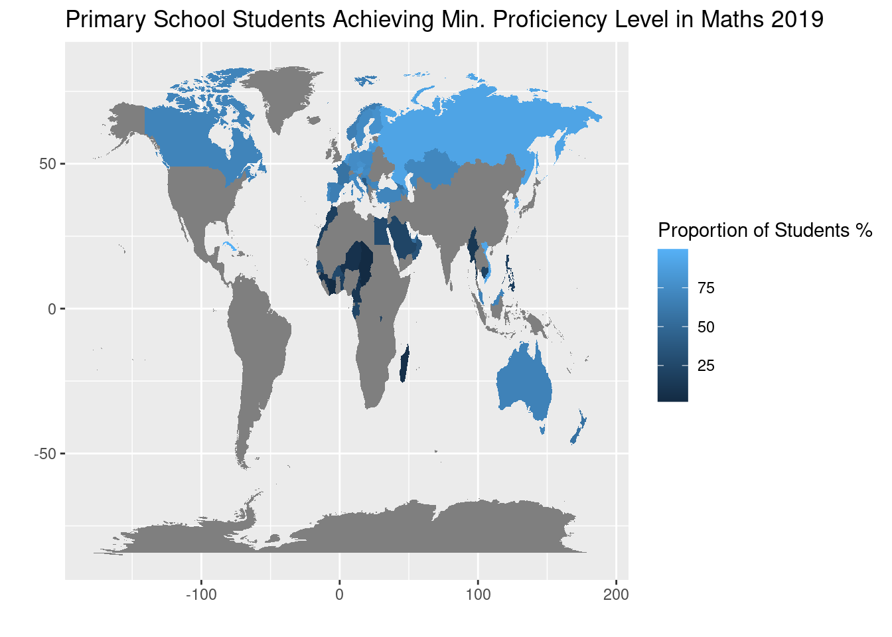
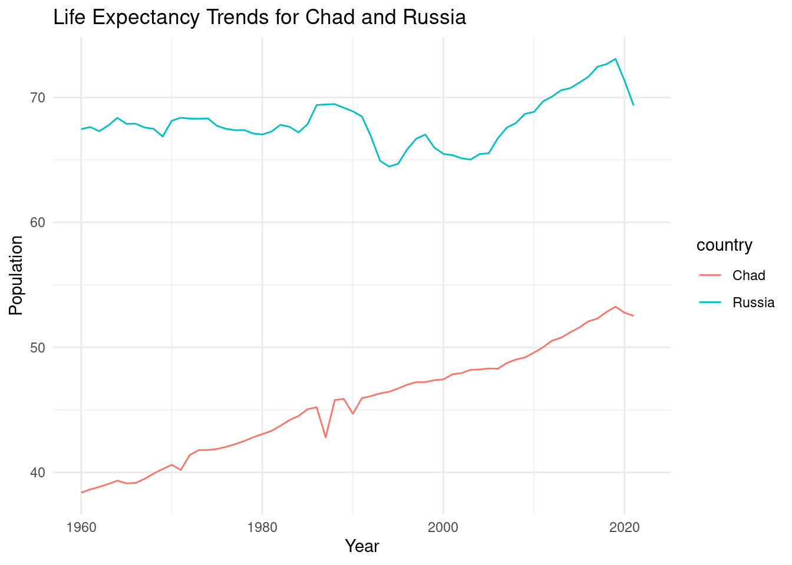
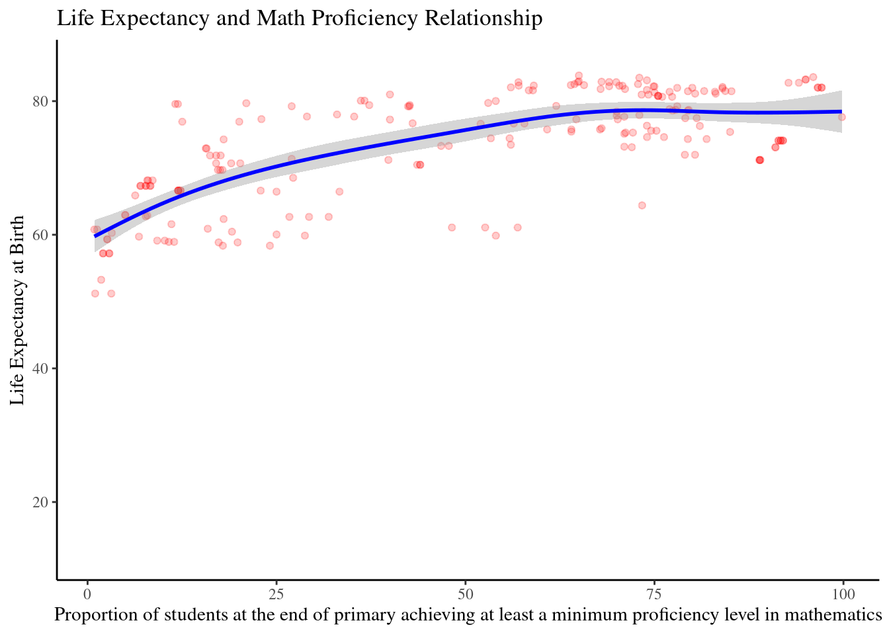
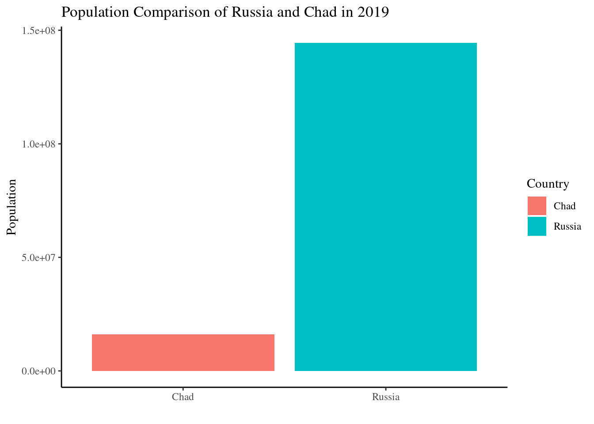

Global Development Insights
Exploring the Relationship Between Population, Life Expectancy and Math Prociency in Primary Education throughout the years
Introduction
Welcome to Global Development Insights: Exploring the Relationship Between Population, Life Expectancy and Math Proficiency in Primary Education Throughout the Years This dashboard offers a thorough analysis of important global indicators, illuminating the complex relationships between wealth, health and education. We uncover trends, disparities, and opportunities propelling global through visualisations. The visualisations I will explore are:
- World Map
- Time Series
- Scatter Plot
- Bar Chart
Map Visualisation
Time Series Visualisation

Scatter Plot Visualisation

Bar Chart Visualisation

Conclusion
Global Development Insights provides a thorough examination of important metrics, such as life expectancy, population, and elementary school arithmetic competency. This quarto report offers insightful information about the complex global relationships between socioeconomic development, public health, and educational outcomes through dynamic visualisations and analysis. Through a comprehensive grasp of these interrelated elements, decision-makers, scholars, and interest parties can propel advancements towards the objectives of sustainable development and enhance the welfare of people worldwide.